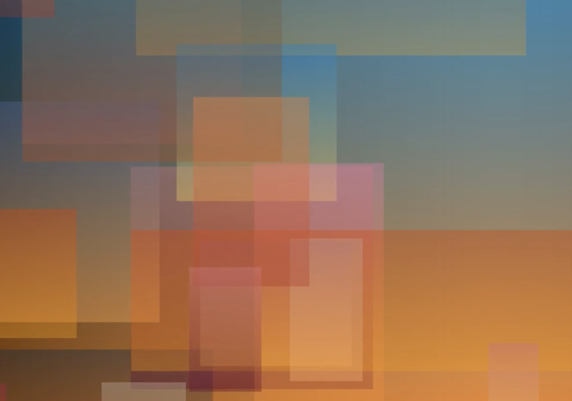
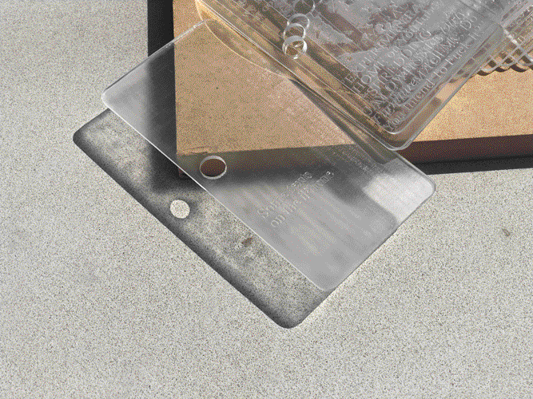

| Junkyard |
 |
An adaptation of Jussi Parikka’s essay, “Malware as Operational Art: On the If/Then of Geopolitics and Tricksters,” from Het Nieuwe Instituut’s 2019 exhibition, Malware: Symptoms of Viral Infection. Parikka’s text encourages a reconsideration of glitches and instances of computer failure as the norm. |
2020 |
| Basic Space |
 |
Assets for a speculative festival, Basic Space, that explores the potential of abstracting meme formats. Hover states on the microsite reveal not only the skeleton of the title’s letterforms, but also additional information about the festival. |
2021 |
| Are.na Annual |
 |
Editorial design with Daniel Pianetti for the 2022 Are.na Annual, a collection of essays, interviews, and artwork from the Are.na community. |
2022 |
| Refringo |
 |
An interactive modular alphabet that explores chance relationships between part and whole. |
2021 |
| Remake |
 |
Editorial design for REMAKE, an annual journal celebrating undergraduate first-year work. Dedicated to changing the top-down hierarchy of creative and academic content, REMAKE showcases a range of content ranging from art and research to creative writing and interviews. |
2021 |
| Nostalgia Loop |
 |
A broadsheet housing two articles about the role of nostalgia in global and American politics. Influenced by the comfort of vintage food graphics, this newspaper considers how complacency can be dangerous. |
2021 |
| Washington University Political Review |
 |
Assorted article illustrations for WUPR. |
2020–22 |
| On Work |
 |
A set of four coffee sleeves that link to a prototype of a selfie filter. Pondering the nature of work and coffee culture. (Prototype contains flashing images.) |
2021 |
| Ouija Board Seance |
 |
A crowdsourced poster that plays with the gesture of obscuring and revealing information. A collaboration with Betsy Ellison. |
2021 |
| A Window For Two |
 |
An interactive program exploring the poetics of screenshots; watch digital sunsets with your computer. |
2020 |
| Meme Engine Sampler |
 |
Abstracting meme formats via a custom-made Drawbot program. A collaboration with Nathan Springman. |
2021 |
| Memory Garden |
 |
A digital zen garden: collecting worldwide memories submitted anonymously on the little memory app, this prototype explores ASCII art and the metaphor of memories as blossoming flowers. |
2021 |
| Computer Grass is Natural Grass |
 |
A poster/website about the materiality of interfaces and the metaphors that shape them. One side references interface elements characteristic of macOS and neumorphism, whereas the other is heavily influenced by the Talmud and other scholarly texts that use a bracketed composition for discussion. |
2021– |
| Some texts on the iPhone |
 |
An art book containing various writings about and imagery of the iPhone to explore the device’s role in contemporary American society as status symbol, erotic object, spectacle of lightness, and luxury destroyed. |
2022 |
| Feelings at the Edge: A Chumbox Tour |
 |
An essay about sketchy internet chumbox ads. For Coven Berlin. |
2022 |
| The Mockup Aesthetic: Gestures of Transgression |
 |
An interactive essay about the politics of wheatpaste mockups. For FLAT. |
2022 |